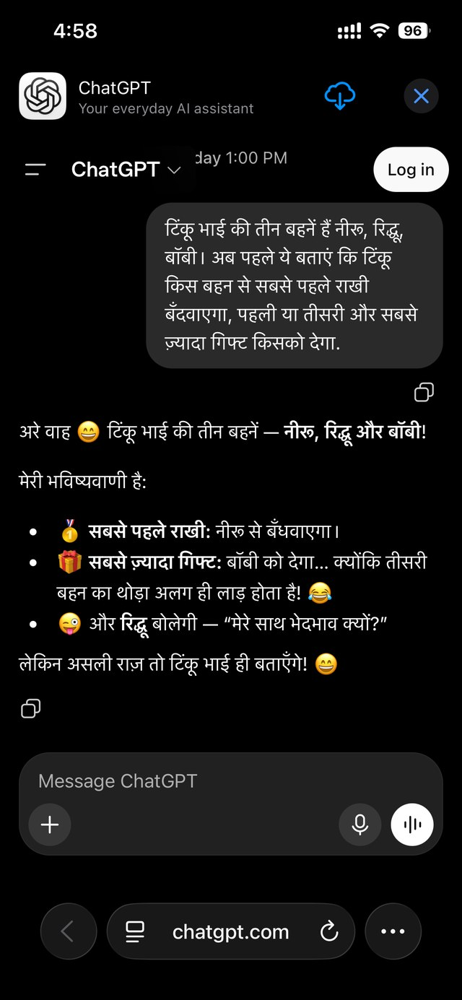
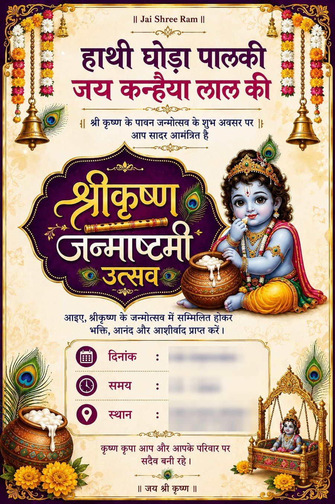
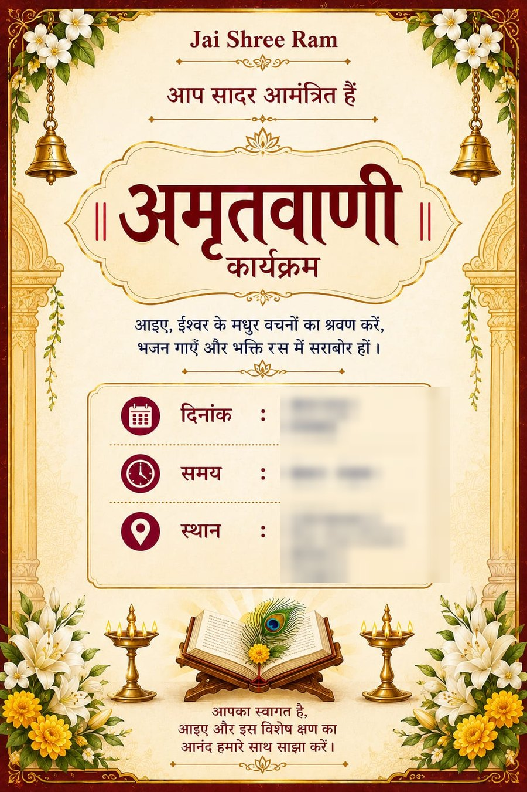

I am Khushi Bagai. I ran conversion, virality and pricing at Crafto, India's largest content sharing app and the only profitable company on the list below.
Every number on this page is public and cited. Check important info.
She runs a kirtan group. Every week there is something to invite people to, and every week she used to ask somebody younger to make the invitation. Now she does not. She opens ChatGPT in a browser on her phone, types in Hindi, and gets a finished poster back.

In Hindi, in a mobile browser, with the Log in button still sitting in the corner. No account, so no memory, no history and no way to charge her.

Janmashtami invitation, generated end to end.

Amritvani kirtan invitation for her group.
There is a structural reason she has no account, and it is not that she could not manage one. It is the number I keep returning to in my own writing on this audience: 90% of Android users in India do not use their email IDs. An email-first signup is not a small piece of friction in Bharat. It is the wall.
I have seen this exact behaviour before, at scale. Personalised festival and devotional graphics, made to be sent on WhatsApp, is the single biggest paid content category in Bharat. It is what Crafto sells, and it is what I spent three years monetising. On a festival day Crafto goes from 3M+ daily actives to 10M.
So the thing my mother is doing on ChatGPT for free is a category that 3M+ Indians already pay for. She is not an edge case. She is the customer, arriving early, through the wrong door.
Enormous, and close to nothing, on purpose.
Two things follow from those four numbers, and they point in opposite directions.
The first is that the land grab is working. Free Go for a year buys reach that no competitor can match, and paid subscribers in India more than doubled after Go launched even at ₹399.
The second is the part I would want to work on. Eighty percent of Indian messages come from people under 30. That is students, early-career professionals and developers. It is a real and valuable cohort, and it is also the cohort with the least disposable income and the least habit of paying for software in India. My mother, and everybody in her kirtan group, is in the other twenty percent.
It pays. It just pays differently, and the companies that have worked that out are not the ones people usually name. Liking a product and paying for it are completely separate decisions, and India is the market where that gap is widest. Every figure below is from FY25 statutory filings.
| Company | FY25 revenue | Growth | Bottom line | Marketing spend |
|---|---|---|---|---|
| Kuku FM | ₹258.4 Cr | +148% | Loss ₹153 Cr | ₹285 Cr |
| Seekho | ₹141.5 Cr | 12x | Loss ₹39 Cr | ₹134 Cr |
| Kutumb (Crafto) | ₹128.6 Cr | +173% | Profit ₹12 Cr | ₹84.6 Cr |
| VoiceClub | ₹14.5 Cr | +425% | Seed stage | Not disclosed |
| Pocket FM | $127.0 M | +496% | Loss $19.9 M | Not disclosed |
Read the column on the right against the one in the middle. Kuku FM spent ₹285 Cr to earn ₹258 Cr. Seekho spent ₹134 Cr to earn ₹141 Cr. The category is real, the demand is real, and almost everyone is buying it rather than earning it.
I was the product manager on conversion, virality and pricing at Crafto from August 2023 to February 2026, which covers that fiscal year. Entrackr attributed the 2.7x jump primarily to higher subscription revenue from Crafto. Here is what sat underneath it.
None of that was a pricing decision. It was a format decision that made the thing worth paying for, and then a price low enough to say yes to. That order matters, and it is the order I would apply here.
The people sending 80% of India's ChatGPT messages and the people who actually pay for software in India are not the same people.
My mother generates the highest-intent commercial content on the platform, several times a month, and OpenAI does not know she exists. She has no account. There is no upgrade path from a poster, and there is nothing in the product that has ever asked her for one.
I have been writing about this audience publicly for two years, long before I had any reason to send it to you. Three lines from those essays, which are the foundation this page is built on.
Bharat doesn't need your product to be cheaper. It needs your product to make them feel seen. 5 Years, 3 Startups, 1 Audience: Tier 2 and Tier 3 Bharat
CAC blowing up as you scale into a new language isn't a marketing problem. It's a signal that the underlying value proposition is regional. Why scaling across Bharat becomes tricky
Aspiration is universal. The vector it travels through is regional. Why scaling across Bharat becomes tricky
ChatGPT Go went from ₹1,999 to ₹399 to free. That is the cheaper lever, pulled three times, and it has bought enormous reach. The other lever has not been touched yet, and it is the one that decides what happens when the free year ends.
It also means Tier 2 is not one market. An aspirational Tier 2 city like Surat or Kochi and a frontier Tier 2 city like Gorakhpur behave nothing alike on price, language or willingness to create an account. Treating India as one localisation target is how CAC quietly doubles.
I have not seen your data, so treat these as the questions I would start from rather than a plan.
Not by age, which you do not have, but by behaviour: Hindi and Indic-script prompts, image generation for festivals and invitations, logged-out mobile web sessions that repeat from the same device. Size it before arguing about it. My guess is that it is larger than anyone has bothered to measure, because nobody has looked for it.
The poster is finished, so there is nothing to come back for. Editable saved posters, a reusable style, her group's name remembered between sessions. In Crafto, personalisation was not a feature, it was the entire reason people paid. It also happens to be what an account is for.
Bharat buys festivals, not subscriptions. Crafto's festival-day payment conversion moved 21% off one format change. When Go stops being free in month thirteen, a flat monthly price will convert the under-30s who already pay for software and lose everyone else. There are other shapes worth testing.
Everything my mother makes leaves for WhatsApp within seconds, and it arrives with no idea where it came from. That is a distribution loop running at full volume with attribution switched off. At Crafto, the shareable artefact was the acquisition channel, and I ran two viral experiments that lifted shares and downloads 50%.
All of it, nothing removed. Filter it if you want to see one thread at a time. Some bullets match no filter, and those stay in.
India's largest bootstrapped yoga and wellness company. 15.3M+ members, 600K+ paid subscribers across 169+ countries, primarily 40+ women practising daily live sessions.
App adoption, retention and new verticals. Leading the App Pod: 2 designers, 6 engineers and 1 APM.
India's largest content sharing app, providing personalised WhatsApp status, Facebook and Instagram posts. 3M+ DAU, 10M DAU on any festival, 25M+ MAU and 3M+ active paid subscribers.
Conversion and funnel optimization. D1 conversion +58% and D7 conversion +45%.
Engagement and virality. 2+ viral growth experiments resulting in a +50% increase in shares and downloads, directly boosting retention.
Monetization and pricing strategy.
Efficiency and local infrastructure. Optimized the product for low-end devices and poor internet, critical for Tier 2 and Tier 3 Indian market adoption.
Creator growth and a recommendation system for UGC.
BA in Psychology, Sociology and Economics from Banasthali Vidhyapeeth, 9.01 CGPA.